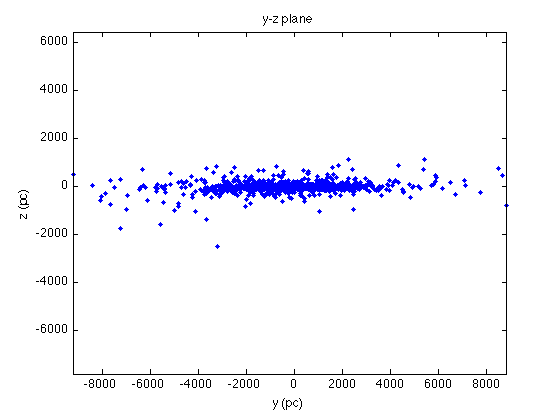

Shape of the Milky Way
This is a reference for you to see if you did everything correctly, what should be on your screen. Note that some commands in this page are blocked (using ...) for you to figure out by yourself.
Contents
Read and organize the data
Now we plot the distribution of the same 1777 open clusters, but this time we have distance information about the clusters and can plot them in 3-space rather than just their projection onto the celestial sphere as we did in Part I.
First, load the data and save them to a variable, e.g., galOC:
galOC = load('clusters_relevantGAL.txt');
This time, the third column gives distance in pc and the coordinates are in galactic coordinates (longitude and latitude both in degrees).
We must change from degrees to radians since we will use cos and sin functions to transform from galactic (i.e. polar) to cartesian coordinates:
lonOC = galOC(:,1).*2*pi/360.0; latOC = galOC(:,2).*2*pi/360.0;
Then we can calculate the , , and coordinates of each galaxy:
xoc = galOC(:,3).*cos(latOC).*cos(lonOC); yoc = galOC(:,3).*cos(latOC).*sin(lonOC); zoc = galOC(:,3).*sin(latOC);
Make the plots
Now let's plot the projection of the open clusters onto the x-y plane (distribution as viewed from above galaxy):
figure(2); clf plot(xoc,yoc, 'b.') xlabel('x (pc)') ylabel('y (pc)') title('x-y plane')
Also the projection onto the other two planes intersecting the galactic center, one perpendicular to the line of sight from earth and one parallel:
figure(3); clf plot(xoc,zoc, 'b.') xlabel('x (pc)') ylabel('z (pc)') title('x-z plane')
figure(4); clf plot(yoc,zoc, 'b.') xlabel('y (pc)') ylabel('z (pc)') title('y-z plane')
3-D distribution
Or, you can use plot3 function to make a 3-D plot showing the distribution of open clusters in the space:
figure(5); clf plot3(xoc, yoc, zoc, 'bo') grid on axis square xlabel('x (pc)') ylabel('y (pc)') zlabel('z (pc)') title('3-D distribution')
Then use the Rotate 3D icon to change the angle of view.